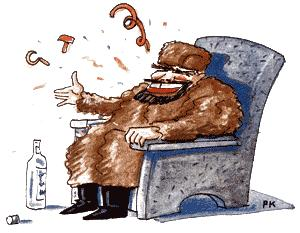
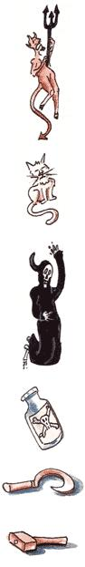

Last Laugh
When ideas fail, words come in very handy.-Goethe
Well sir, the Ramblin' Rail Riders of the Plumtree Crossing General Assembly had seen enough of New Jersey (last issue, remember?), so they jumped on a southbound train. It was a dank, bonechilling March night. No one was in the fellas' railcar except one heavyset man in an old burly overcoat, so Purvis Jacobs pulled out a jug of homemade pertnin' juice and passed it around. After Ott Bartlett took his swallow, he offered some to the stranger beside him.
"Spasibo," the man said, and took a long swig. The boys smiled slyly when that fella filled his throat with Jacobs' 150-proof tonsillectomizer. But the man just smacked his lips and passed the jug on. "Horoshiey," he said, then produced his own bottle from his overcoat and offered it to Ott. Bartlett was a tad surprised, but then tilted 'er back.
"Vodka," the man said in a thick voice. "My name is Ivan Redneckovich. I emigrate from Russia. Happy to meet you."
You could have knocked our boys over with a sparrow's breakfast when they heard that. After sharing a few rounds of liquid glasnost, though, the Plumtree gang was feeling downright comradely. Ol' Ivan loosened up, too.
"I come from Mother Russia," he said, "because I was a farmer, and who can farm under communism? Do you know what the government claims are the four reasons for the failure of Soviet agriculture? Spring, summer, fall and winter."
The fellas were a bit surprised to hear a Russian crack a joke, but Ivan soon proved that his people aren't a bit backward when it comes to humor.
"One day Premier Gorbachev was complaining to the minister of agriculture that his Kremlin office was infested with mice. The minister's suggestion? `Why don't you put up a sign in your office saying Collective Farm? That way half the mice will die of hunger, and the other half will run away.'
"A frustrated woman once wrote the same minister of agriculture to complain about the constant shortage of meat. He had an answer for that, too. `Comrade Housewife,' he replied, `you must understand that we are moving toward communism so quickly that the livestock cannot keep up with us.' "
Just then Lafe Higgins (who was feeling the effects of the vodka-moonshine combination more than most) broke in. "I aways thought ya'll Russins was tryin' to conquer the world."
"If we did that," replied Redneckovich, "where would we buy our wheat?"
"So you came to America to farm?" Clarence Smithers asked.
"I come for many reasons. Let me explain with a story. Stalin dies and goes to heaven. St. Peter meets him at the Pearly Gates and says, `You can't come here. Go to hell where you belong.' Stalin grumbles and shuffles off:
"Sometime later, St. Peter hears a commotion and finds 15 devils shaking the Pearly Gates trying to get in. 'What are you doing here?' he demands. They reply, 'We are the first refugees.'
"You understand? I leave Russia because I am like the baby kittens of the school boy. When the teacher asked him to use the word communists in a sentence, he said, 'My cat had kittens and they are all good communists.' Several weeks later, the teacher asked him to use capitalists in a sentence, and the boy said, 'My cat had kittens and they are all good capitalists.'
"The teacher was shocked. `You told me the kittens were good communists. How can they now be good capitalists?' The boy answered, 'Comrade Teacher, they've opened their eyes now.'
"There is too much fear in Russia," Ivan went on. "One day I heard loud knocking at my door. I was very scared and asked, 'Who is it?' 'The Angel of Death,' came the reply. '`Thank goodness,' I said. `For a moment I thought it was the secret police.'
"Also, we must wait hours to buy almost anything. One optimist in my homeland predicts that by the year 2001, waiting in lines will finally be eliminated. Then a boy will ask his grandfather what a queue was, and the old man will reply, 'A queue was a line, my child. Back in the 1980s, things like butter were in short supply, so people had to form queues in front of stores and wait their turn to buy.'
"The boy's next question? 'What was butter?'
"Of course, we do pride ourselves on our Soviet medicine. Indeed, at an international medical conference once, a French specialist complained, `Today we treat people for diabetes and they end up dying of heart disease.' An American colleague sadly added, 'We treat patients for high blood pressure and they end up dying of old age.' But the Russian doctor was proud. `We have no such problems. When we treat them for a disease, they die of that disease.' "
The train was pulling to a stop, so Ivan put the cap back on his vodka and told one last tale. "Americans these days worry about having a depression. Russians have the same fear. One day a worker went to a local bank to deposit his paycheck. Nervous about the economy, he asked what would happen if the bank collapsed.
" 'All deposits are guaranteed by the ministry of finance,' the teller replied.
" 'But what if the ministry of finance could not honor the guarantee?' the worker persisted.
" 'In that case the entire Soviet government would come to our assistance.'
" 'But what if the Soviet Union collapsed?'
" 'Idiot!' snapped the teller. 'Isn't that worth losing one lousy paycheck?' "
|
 |
 |
|